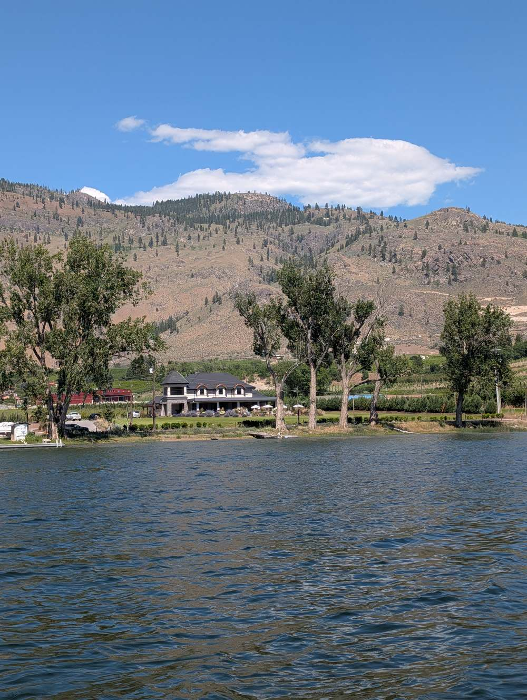

Riparian rights, dock permits, foreshore leases, and flood construction levels — the specifics that separate a straightforward waterfront purchase from a stressful one.
Osoyoos Lake is one of the warmest lakes in Canada, and true waterfront property here is limited and tightly held — much of it doesn't turn over often, and pricing reflects that scarcity. Buyers who want lakefront specifically should expect a smaller, more competitive pool of listings than the broader Osoyoos market.
The upside of that scarcity is real: swimmable water most of the summer, boating access, and a lifestyle that's genuinely hard to replicate. The trade-off is that waterfront properties come with a layer of regulation that in-town or acreage properties simply don't have.
Enter your details below and the rest of this guide unlocks immediately — plus you'll get a copy emailed to you for reference.
In BC, the foreshore — the area between the high and low water marks of a lake — is generally Crown land, not privately owned, even when a property is described as "waterfront." What a waterfront owner typically has is a riparian right of access to the water, not outright ownership of the lakebed or foreshore itself.
Anything built on or over the foreshore — a dock, a retaining wall, a boat launch — usually requires separate provincial authorization (a licence of occupation or lease), regardless of what's already there when you buy. An existing dock doesn't necessarily mean a valid, transferable permit exists for it.
Before assuming a dock, boat lift, or retaining structure is yours to use and maintain as-is, confirm whether it's covered by a valid foreshore lease or licence of occupation registered with the Province. Structures built without authorization can carry compliance risk for a new owner, even if the previous owner built or used them for years without issue.
Documentation of any foreshore lease or licence of occupation, confirmation it's transferable to a new owner, and whether any local bylaws (Town of Osoyoos or RDOS, depending on location) affect dock size, setbacks, or lighting.
Waterfront and near-waterfront properties are often subject to a Flood Construction Level (FCL) — a minimum elevation requirement for habitable floor space, set to reduce flood risk based on historical lake levels. This can affect renovations, additions, or rebuilding after a loss, even if the existing structure predates the current requirement.
What FCL applies to this specific property, and whether the existing structure meets it. An older waterfront cottage that doesn't meet current FCL requirements may face additional restrictions or costs if you want to substantially renovate or rebuild it down the line.
A buyer is considering a lakefront cottage with a private dock and wants to confirm everything is in order before writing an offer.
Illustrative example — not a specific listing.
None of this is meant to discourage you from buying waterfront — it's meant to make sure the dock you assume comes with the property, actually does, on paper as well as in practice. If the property also includes acreage, our Acreage Buyer's Guide and Climate & Insurance Risk Guide cover additional ground worth reading.
Let's confirm the details before you fall in love with a dock that might not transfer cleanly.